Lección 5.C - Simulación de procesos AR(1) y exploración de sus correlogramas
Índice
Objetivo de la práctica
| Guión: | P-L05-C-simulacion-procesos-AR.inp |
Objetivo
- Observar la ACF y PACF de distintos modelos AR(\(1\)).
- Observar que el signo y la magnitud de \(\theta_1\) afecta al signo y magnitud de la autocorrelación de orden 1.
- Observar que el signo y la magnitud de \(\theta_1\) afecta al comportamiento de la PACF y su velocidad de decaimiento.
Requerimientos previos
Programe o recupere de una práctica anterior una función que simule procesos AR(\(q\))
function series SimuladorAR(matrix phi)
# SimuladorAR(phi) simula un proceso AR(p),
# donde phi es el polinomio AR y p es su grado.
scalar p = cols(phi)
series U = normal(0,1)
series Y = 0
setinfo Y --description="Serie simulada"
loop i = (p+1)..$nobs
scalar comb_pasado_Yt = 0
scalar perturbacion = U[i]
loop j = 2..p
comb_pasado_Yt += -phi[1,j] * Y[i-j+1] # expresión abreviada
endloop
Y[i] = comb_pasado_Yt + perturbacion
endloop
return Y
end function
Para que se observe bien la estructura de las ACF y PACF estimadas, establezca un tamaño de muestra suficientemente grande.
# establecemos la muestra
nulldata 1500
setobs 12 1900:01 --time-series
Actividad 2 - Modelos AR(\(1\)) parámetro positivo
Pruebe a simular modelos AR(\(1\)) \[ (1-\theta\mathsf{B})*\boldsymbol{X}=\boldsymbol{U} \] donde \(\boldsymbol{U}\sim WN(0,1)\), con valores paramétricos: entre \(0\) y \(1\); y estime los correlogramas.
- Para \(\theta_1\approx0,\quad0.2,\quad0.4,\quad0.6,\quad0.8,\quad1\).
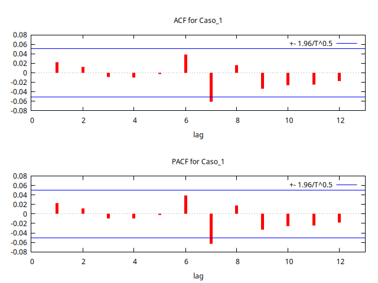
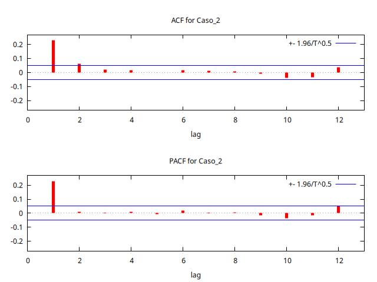
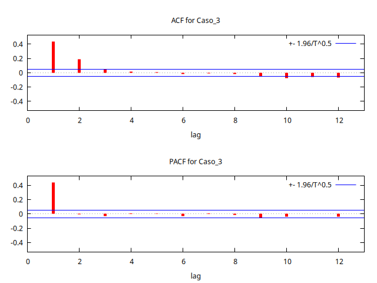
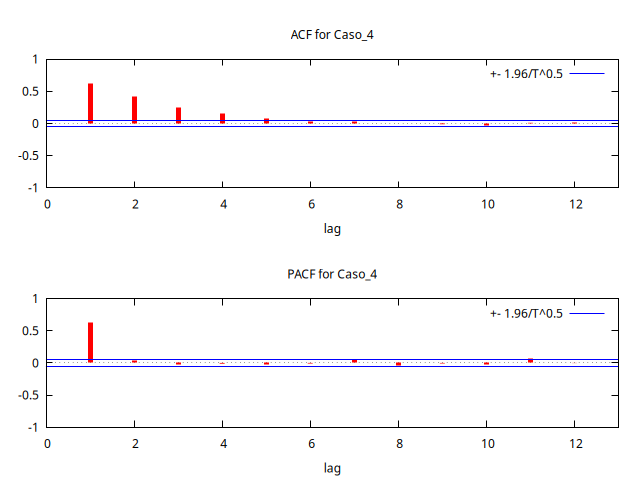
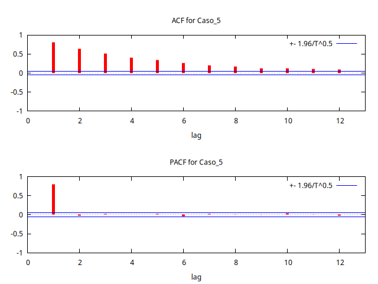
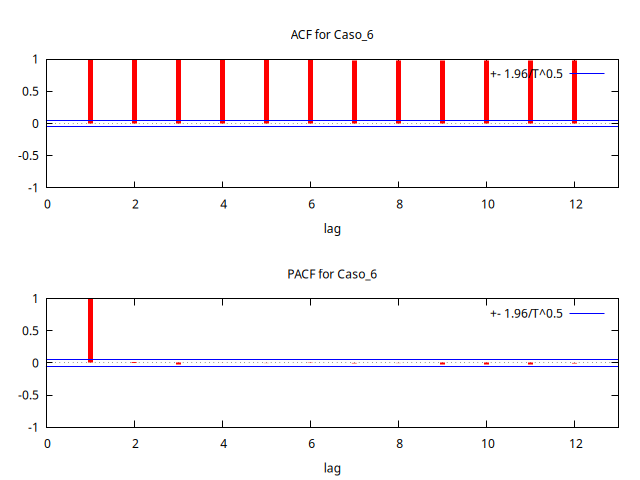
Actividad 1 - Modelos AR(\(1\)) parámetro negativo
Pruebe a simular modelos AR(\(1\)) \[ (1-\theta\mathsf{B})*\boldsymbol{X}=\boldsymbol{U} \] donde \(\boldsymbol{U}\sim WN(0,1)\), con valores paramétricos: entre \(-1\) y \(0\); y estime los correlogramas.
- Para \(\theta_1\approx-1,\quad-0.8,\quad-0.6,\quad-0.4,\quad-0.2,\quad0\).
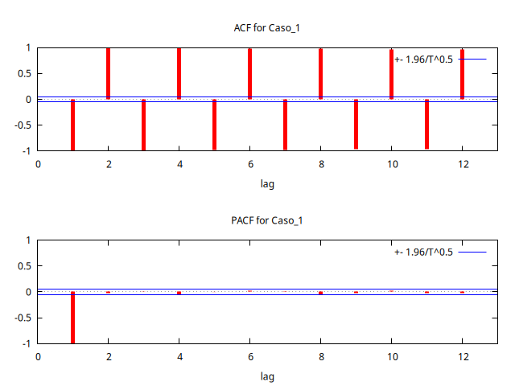
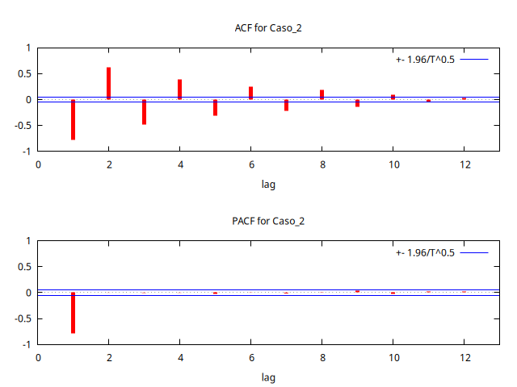
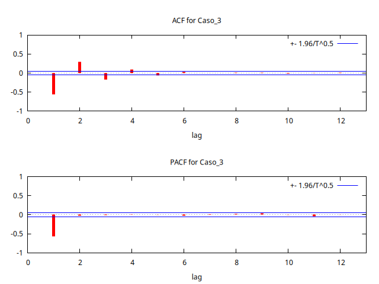
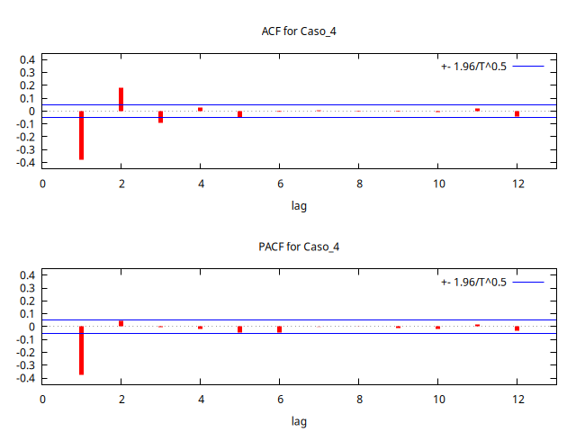
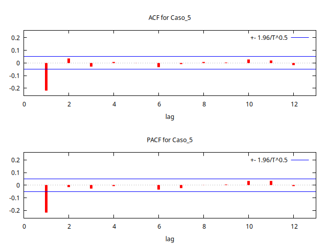
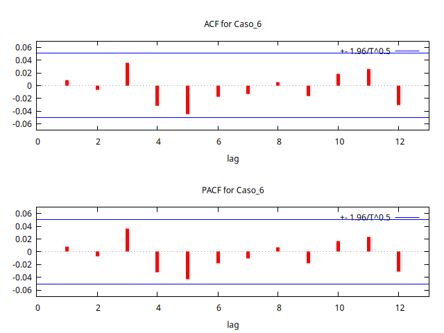
Código completo de la práctica
| Guión completo: | P-L05-C-simulacion-procesos-AR.inp |